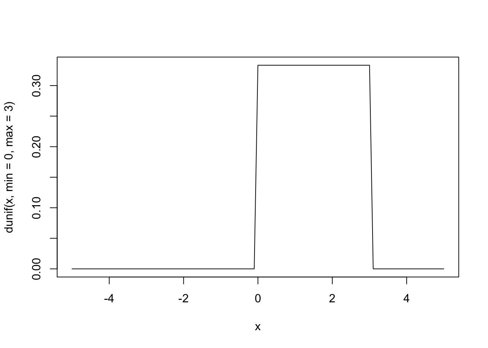
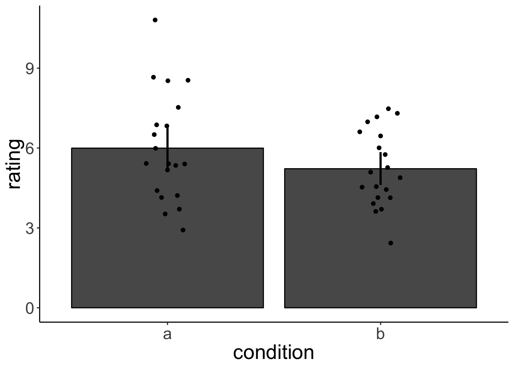

Chapter 4 Understanding core statistical concepts through simulation
4.1 Learning goals
- descriptive statistics –> describing the sample
- inferential statistics –> drawing inferences about the population from the sample
- central limit theorem
- standard error of the mean
- confidence intervals
- bootstrap
- bootstrapped confidence intervals
- NHST
- p-value
- permutation test
- power analysis
- bootstrap
- type I and type II errors
- use ideas from data camp course
- illustrate ideas related to correlation: https://crumplab.github.io/statistics/Correlation.html#if-something-caused-something-else-to-change-what-would-that-look-like
- how gifs were produced: https://crumplab.github.io/statistics/gifs.html#correlation-gifs
4.2 Sampling
Throughout the course, we will use sampling and visualization to get an intuitive understanding of important statistical principles. R makes it easy to generate data.
4.2.1 sample()
sample() randomly samples the elements of a vector. So each time you run sample(), you might get a different answer.
We can define how many samples we’d like to draw using the size argument.
sample(c('red', 'green', 'blue'), size = 5)
#> Error in sample.int(length(x), size, replace, prob): cannot take a sample larger than the population when 'replace = FALSE'I got an error here because I asked for more samples than there are elements in the vector.
This worked because I specified to sample with replacement. So now, the same value might be sampled multiple times.
sample(c('red', 'green', 'blue'), prob = c(0.1, 0.1, 0.8), size = 10, replace = T)
#> [1] "blue" "blue" "blue" "blue" "blue" "blue" "blue" "blue" "red" "red"Here, I’ve specified the probability with which the different elements should be sampled via the prob argument. So now, I’m more likely to see “blue” than “red”, or “green”.
4.2.2 sample_n()
Instead of sampling individual values from a vector, we sometimes want to sample rows from a data frame. We can use the sample_n() function to do so.
df.tmp = data_frame(
id = 1:10,
condition = rep(c('a', 'b'), each = 5),
rating = sample(1:10, size = 10, replace = T)
)
print(df.tmp)
#> # A tibble: 10 x 3
#> id condition rating
#> <int> <chr> <int>
#> 1 1 a 1
#> 2 2 a 5
#> 3 3 a 8
#> 4 4 a 4
#> 5 5 a 4
#> 6 6 b 2
#> 7 7 b 8
#> 8 8 b 4
#> 9 9 b 6
#> 10 10 b 7
#we sample 5 rows from the data frame
df.tmp %>%
sample_n(size = 5)
#> # A tibble: 5 x 3
#> id condition rating
#> <int> <chr> <int>
#> 1 5 a 4
#> 2 4 a 4
#> 3 6 b 2
#> 4 10 b 7
#> 5 9 b 6Instead of defining the number of rows to sample, we can also specify the fraction.
#let's randomly sample 20% of the rows
df.tmp %>%
sample_frac(size = 0.2)
#> # A tibble: 2 x 3
#> id condition rating
#> <int> <chr> <int>
#> 1 5 a 4
#> 2 10 b 7Like in sample(), we can also specify whether to sample with replacement, and assign weights that influence how likely each row is sampled.
df.tmp = data_frame(
id = 1:10,
condition = rep(c('a', 'b'), each = 5),
rating = sample(1:10, size = 10, replace = T),
weight = rep(c(2, 1), each = 5) #these weights will make it more likely that condition 'a' will be sampled
)
df.tmp %>%
sample_frac(size = 1, replace = T, weight = weight)
#> # A tibble: 10 x 4
#> id condition rating weight
#> <int> <chr> <int> <dbl>
#> 1 9 b 9 1
#> 2 1 a 8 2
#> 3 7 b 3 1
#> 4 4 a 10 2
#> 5 4 a 10 2
#> 6 3 a 6 2
#> 7 4 a 10 2
#> 8 10 b 10 1
#> 9 6 b 5 1
#> 10 3 a 6 24.2.3 Sampling from probability distributions
R comes equipped with a large number of probability distributions that we can sample from. Here is an extensive list of probability distributions that come with R (and any of its many packages).
Here, I’ve sampled 5 times from a uniform distribution with a minimum of 0 and a maximum of 20.
This time, I’ve sampled 5 times from a normal distribution with mean 0 and standard deviation 2. R makes it easy to visualize what different distributions look like via the curve() function.
Figure ?? shows the density of the uniform distribution with a minimum of 0 and a maximum of 3.

Figure ?? shows the density of the normal distribution with a mean of 0 and a standard deviation of 1.

Figure ?? shows the density of the beta distribution with shape parameters 5 and 3.

Most probability distributions in R can be used in four different ways (I use foo here as a place holder for the distribution name):
| name | form | description | use |
|---|---|---|---|
dfoo() |
f(x) = P(X = x) | density | density of a particular value |
pfoo() |
f(x) = P(X <= x) | distribution function | cumulative density function |
qfoo() |
quantile function | inverse cumulative density function | |
rfoo() |
random generation | sample random numbers from distribution |
How much of the probability lies within one standard deviation of the normal distribution?
pnorm(1, mean = 0, sd = 1) - pnorm(-1, mean = 0, sd = 1)
#> [1] 0.6826895
ggplot(data = data_frame(x = seq(-3, 3, 0.1),
y = dnorm(x)
), aes(x = x, y = y))+
geom_line()+
geom_vline(xintercept = c(-1,1), color = "blue", size = 1.5) And within two?
And within two?
pnorm(2, mean = 0, sd = 1) - pnorm(-2, mean = 0, sd = 1)
#> [1] 0.9544997
ggplot(data = data_frame(x = seq(-3, 3, 0.1),
y = dnorm(x)
), aes(x = x, y = y))+
geom_line()+
geom_vline(xintercept = c(-2,2), color = "red", size = 1.5)
4.3 Central limit theorm
4.4 What is a p-value?
Probability of observing data that is as extreme (or more) assuming that the null hypothesis is true.
4.4.1 Permutation test
set.seed(0)
df.data = data_frame(
a = rnorm(20, mean = 6, sd = 2),
b = rnorm(20, mean = 5, sd = 2)
) %>%
gather('condition','rating')
df.data %>%
group_by(condition) %>%
summarize(rating.mean = mean(rating),
rating.sd = sd(rating)) %>%
kable()| condition | rating.mean | rating.sd |
|---|---|---|
| a | 5.996443 | 2.042983 |
| b | 5.223299 | 1.434074 |
# calculate the difference between conditions
difference.actual = df.data %>%
group_by(condition) %>%
summarize(rating.mean = mean(rating)) %>%
pull(rating.mean) %>%
diff() %>%
-.ggplot(data = df.data, aes(x = condition, y = rating))+
stat_summary(fun.y = mean, geom = 'bar', color = 'black')+
stat_summary(fun.data = mean_cl_boot, geom = 'linerange', size = 1)+
geom_point(position = position_jitter(height = 0, width = 0.1))
The difference in the mean rating between condition a and b is 0.7731439. Is this difference between conditions statistically significant? What we are asking is: what are the chances that a result like this (or more extreme) could come about due to chance?
Let’s answer the question using simulation. Here is the main idea: imagine that we were very sloppy in how we recorded the data, and now we don’t remember anymore which participants were in condition a and which ones were in condition b (we still remember though, that we tested 20 participants in each condition).
set.seed(0)
df.permutation = df.data %>%
mutate(permutation = sample(condition)) #randomly assign labels
df.permutation %>%
group_by(permutation) %>%
summarize(rating.mean = mean(rating),
rating.sd = sd(rating)) %>%
kable()| permutation | rating.mean | rating.sd |
|---|---|---|
| a | 5.459136 | 1.915439 |
| b | 5.760605 | 1.681729 |
ggplot(data = df.permutation, aes(x = permutation, y = rating))+
stat_summary(fun.y = mean, geom = 'bar', color = 'black')+
stat_summary(fun.data = mean_cl_boot, geom = 'linerange', size = 1)+
geom_point(aes(color = condition), position = position_jitter(height = 0, width = 0.1))
Here, the difference between the two conditions is -0.3014695.
Now, let’s do this many times to get a distribution of the differences we would expect, if there was no effect of condition.
set.seed(0)
n.permutations = 300
#construct a data frame to save the results of our simulations
df.permutations = data_frame(
permutation = 1:n.permutations,
mean.difference = NA
)
#calculate the mean difference for each random permutation
for (i in 1:n.permutations){
df.permutations$mean.difference[i] = df.data %>%
mutate(condition = sample(condition)) %>% #we randomly shuffle the condition labels
group_by(condition) %>%
summarize(mean = mean(rating)) %>%
pull(mean) %>%
diff(.) %>%
-. #looks funny but works
}
#alternative specification using a function
# func_permutations = function(x){
# x %>%
# mutate(condition = sample(condition)) %>% #we randomly shuffle the condition labels
# group_by(condition) %>%
# summarize(mean = mean(rating)) %>%
# pull(mean) %>%
# diff(.) %>%
# -.
# }
# replicate(10, func_permutations(df.data))
#plot the distribution of the differences
ggplot(data = df.permutations, aes(x = mean.difference))+
geom_density(fill = "gray80")+
geom_vline(xintercept = difference.actual, color = "red", size = 2)+
coord_cartesian(expand = F)